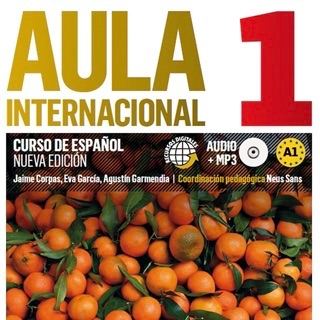

Чанти
-
Bijou Brigitte
Малка дамска чанта в телесен цвят. Тип клъч. Има и ремък за през рамо.

-
Винтидж чанта
Среден размер. Естествена кожа, ръчна изработка. Ремък за през рамо.


Учебници по испански
-
Aula 1 Internacional
Учебник + учебна тетрадка + CD за ниво А1 в Instituto Cervantes. Голяма част от упражненията са попълнени предимно с молив.
 -
Aula 2 Internacional
Учебник + учебна тетрадка + CD за ниво А2 в Instituto Cervantes. Голяма част от упражненията са попълнени предимно с молив.
-
Aula 3 Internacional
Учебник + учебна тетрадка + CD за ниво B1 в Instituto Cervantes. Малка част от упражненията са попълнени предимно с молив.
-
Nuevo Ven 1
Учебна тетрадка Nuevo Ven 1, без CD. Урок 1 и 2 са попълнени с молив, останалата част е непопълнена.
Разни
-
Xanthan Gum
Xanthan gum. Използва се за безглутеново печене. Неотворена.

-
Киноа от Перу
Насипна киноа от Перу. Изисква почистване и миене преди готвене.

-
Сладко от зелени домати
Домашно сладко от зелени домати. Неотворено.
-
Сладко от кайсии
Домашно сладко от кайсии (предполагам, може и от нещо друго да е). Неотворено.
-
Сладко от ягоди
Домашно сладко от ягоди (предполагам, може и от нещо друго да е). Неотворено.
-
Насипен чай "Сребърни игли"
Първокачествен насипен чай от чаена плантация в Шри Ланка. Почти пълна опаковка.

-
Силиконови стелки
Силиконови помощни стелки за дамски обувки. Неразпечатани.

-
Гривна анти комари
Силиконова гривна с аромат на цитронела. Неразпечатана.